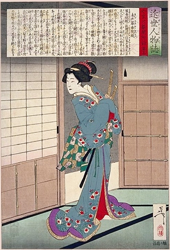
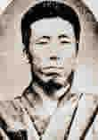
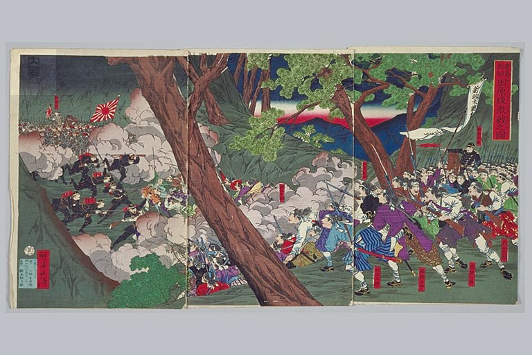
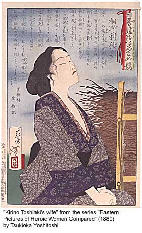
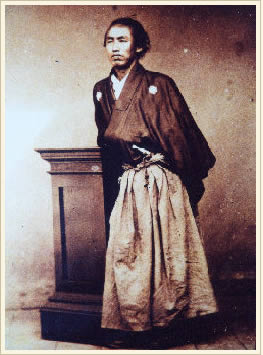

Антрекот
Япония. Истории времен смуты.
(1859-1659)
Истории времен смуты - часть первая
Истории времен смуты - часть вторая
Cамурай и гейша: история из плохого кино
Фамилия господина Хиджикаты
О последнем самурае
О якобитах и культурном обмене
"Чучелом, тушкой..."
"Будни британской миссии"
Кэтрин Кинн. Дракон на марше, или Штрихи к портрету Сакамото Рёмы
Рассказывают гости Удела
Cамурай и гейша: история из плохого кино

Вот эта прелестная дама с двумя мечами - та самая гейша Икумацу, впоследствии
госпожа Кидо Сюкоин. История из плохого кино. Кацура познакомился с ней в
веселом квартале во время облавы - Икумацу, тогда еще майко, помогла ему
спрятать двух коллег, которых люди князя Мацудайры ну никак не должны были
видеть в его компании. В качестве благодарности Кацура выкупил и подарил ей ее
контракт. И нашел способной девушке учителей, с которыми она освоила вторую
(журналисты не в счет) древнейшую профессию - и стала одним из самых ценных
агентов Чошу в старой столице. Это из-за нее Кацура проспал совещание в Икеда-я
и не оказался в списке покойников.
После дела о Дворцовых Воротах, Кацура исчез, Икумацу осталась в Киото. Есть
еще одна история из плохого кино - от пьяных клиентов из Айзу Икумацу узнала,
что бакуфу известно, что Кацура скрывается под городом в доме у какого-то
торговца кухонными принадлежностями. Икумацу ночью выбралась из города, украла
лошадь на заставе и успела на место раньше высланного туда отряда. Они вместе
добрались до Чошу. А когда в Чошу произошел переворот и началась Война с
Четырех сторон, Кацура - а вернее уже Кидо Такаеши - решил, что мир уже стоит
достаточно вверх тормашками, чтобы никто не обращал внимания на всякие мелочи -
и женился на Икумацу. Но этим он не ограничился.
Когда он стал членом правительства, главой его канцелярии сделалась, да, да,
леди Кидо Сюкоин, кто же еще?
* * *
Фамилия господина Хиджикаты
Фамилия господина Хиджикаты, сочиненная им самим - поскольку крестьянам таковая
вообще не была положена, как выяснилось, состоит из кандзи, обозначающих
"земля", "почва" и "человек". Буквально - крестьянин, человек от сохи.
Далее слово предоставляется Михаилу Чекалину (с благодарностью Starsword за
предоставление материала):
"Значит так... Мое маленькое расследование показало следующее:
Если воспользоваться системой подстановки иероглифов, зашитой в Microsoft IME
(у меня IME самое свежее - от мая сего года) на слово ХИДЗИКАТА, набранное
каной, то мы получим три варианта.
Вариант №1
Первый иероглиф: ключ №32 - "ДО" (кунное чтение - цути) земля (почва) и земля
(местность); второй - ключ №70 - "ХО" сторона, направление, в кунном чтении
"КАТА" - (вежливо) личность, человек, лицо, господин; суффикс профессии.
Существует слово ДОКАТА, записываемое именно этими иероглифами и имеющее
перевод на русский язык: землекоп, чернорабочий.
Вариант №2
Тут уже начинается хохма. Во втором варианте в качестве первого иероглифа был
предложен ключ №33 "СИ" (кунного чтения не имеет), а второй иероглиф - без
изменений, в третьем варианте, кстати, он остается тоже. Дело в том, что ключи
№32 и №33 очень похожи. Оба состоят из трех черт: горизонтальной, пересекающей
ее вертикальной и подчеркивающей горизонтальной. Разница в том, что в у №32
третья черта длиннее первой, а у №33 - наоборот.
Так вот, иероглиф "СИ" имеет следующие значения: воин, самурай, благородный
муж. ;)))
Ну и, наконец, вариант №3.
Он нам практически не интересен, хотя и тут может быть зашита определенная
хохма.
Здесь в качестве первого иероглифа нам был предложен ключ №100 "СЭЙ" (жить,
рождаться и т.д.). При чтении "HАМА" данный иероглиф имеет в том числе два
могущих заинтересовать нас значения: чистый (в том же смысле, что и английское
pure) и наглость, дерзость, нахальство. ;)
Вот такие вот пироги.
Естественно, что все сие может быть всего лишь досужими домыслами, но,
насколько я могу судить, японцы игру слов любят и очень, благо существующая
система письменности это позволяет, так что все вполне возможно... ;)))"
Полагаю, что консультант прав и господин тогда еще не подполковник
крестьянин-благородный муж-хулиган получил от сочинения фамилии массу
удовольствия.
* * *
О последнем самурае

Накамура Ханджиро (он же Кирино Тошиаки) из Сацума умудрился сделать очень
странную для человека его наклонностей и профессии вещь - почти дожил до
сорока.
Он родился в хане Сацума, около Кагошима, был третьим сыном в семье и очень
рано начал учиться фехтованию - стиль джиген-рю. Где-то он услышал, что для
того чтобы правильно "набить руку" нужно 8000 раз в день ударить по стволу
дерева боккеном. Как меланхолически замечает его биография "он поломал очень
много деревьев". В 1862 он - молодой мастер меча - поехал в столицу в составе
свиты отца сацумского дайме, познакомился там с доктриной "сонно-джой". И
пропал. Но поскольку сам он был только мечом - и прекрасно это осознавал - он
стал искать себе достойную направляющую руку. Год спустя, он уже был человеком
Сайго Такамори и по его приказу сначала убивал противников дайме, потом -
зарвавшихся имперских лоялистов (см. Дело о Дворцовых Воротах, к пресечению
которого Накамура очень основательно приложил руку), потом правительственных
агентов - а потом и любых сторонников сегуна, кто подвернется.
На предмет Накамуры в Шинсене был персональный приказ: рядовому составу в любом
количестве не пытаться вступать в ближний бой. Только стрелять. (Надо сказать,
и подстрелили один раз. Но неокончательно.)
Фехтовальщиком по свидетельствам был исключительным. Славился силой удара,
вообще характерной для джиген-рю, но у него достигшей каких-то пантагрюэлевских
пропорций. В его биографии было как минимум два эпизода, когда он разрубил
пополам человека вместе с панцырем, имелись перерубленные ружейные стволы, а
так же случаи, когда по причине тесноты и неудобства помещений, один удар
крошил нескольких противников.
Командовал отрядом в войне Тоба-Фушими. В кампании против Айзу командовал
группой, взявшей штурмом замок Вакамацу - на чем эта часть войны и закончилась.
При штурме был опять ранен, причем как-то странно: колющее проникающее ранение
на правой стороне груди, нанесенное в горизонтальной плоскости (очень хочется
сказать "Сайто" и представить себе эту картину, но мало ли на что даже мастер
меча может налететь в суматохе).
По окончании войны был сначала командиром гарнизона в Кагошиме, потом
начальником императорской гвардии. Генерал-майор.
Ушел в отставку вместе с Сайго, вернулся в Сацума, открыл фехтовальную школу.
Не шалил, никого не трогал. И тут началась война Сейнан.
* * *

Это сражение на холме Табарузака, решившее исход последней гражданской войны в
Японии. Справа - войска Сацума, под командой - совершенно верно, Накамуры
Ханджиро. Слева - правительственные войска Тани Канджо. Сражение было долгим и
упорным, но победа осталась за куда более основательно обученной и вооруженной
армией правительства. Да, а артиллерию сацумцев в том бою захватил к тому
времени числившийся истребленным отряд ... токийской военной полиции. Так что,
видимо, счет за Вакамацу можно было считать закрытым.
После этого ход войны повернулся. Накамура вскоре погиб, кажется, последним из
легендарных хитокири.
* * *
А это - портрет его жены.

На картине написано "Она храбро сражалась во главе женского отряда. Когда
объявили перемирие, она лечила раненых и делилась едой с голодающими солдатами.
Она делила радости и горести войск на поле боя и помогала им всем, чем могла."
* * *
Дополнение к "Последнему самураю".
Поскольку большая часть полиции Мейдзи поначалу состояла из самураев провинции
Сацума, то во время войны Сейнан значительная часть полицейских просто перешла
к Сайго - да и оставшихся использовать для военных действий было несколько
неразумно. Поэтому в полицию начали лихорадочно набирать самураев из провинций,
традиционно враждебных Сацума - Айзу и Кувама, и ... уцелевших членов Шинсена,
из которых было сформировано отдельное подразделение Шинсен Ретан. Когда слух
об этом дошел до Накамуры Ханджиро, удивлению его не было предела. "С каких
пор, - спросил он, - правительство берет на службу призраков? И как прикажете с
ними воевать?"
Сайто в Шинсен Ретан не состоял, поскольку на тот момент вообще числился в
розыске. А вот новый его базовый псевдоним обнаружился просто на страницах
газет. 23 августа 77 года в газете "Токио Ничиничи" появился отчет о событиях
на фронте за июль. И там, в частности описывалось, как не то 12, не то 13 июля
на месте действия появилось пропавшее подразделение под командой Фуджиты Горо,
прибрало какие-то еще правительственные войска, взяло штурмом перевал Фукухара
и дошло до Якио. Захватило позицию и пушки, вело с противником артиллерийскую
дуэль, опять перешло в наступление и, несмотря на то, что инспектор Фуджита был
ранен, соединилось с основными силами под Такаюка, замкнув эту часть армии
противника в мешок. Мягко говоря, не удивительно, что после такого
вспышкопускательства Сайто опознали. Было бы странно, если бы этого не
произошло.
Прав был Накамура Ханджиро, воевать с призраками - занятие тяжкое и
неблагодарное.
* * *
О якобитах и культурном обмене
Итак, в 1869 году приехали в Иокогаму представители уже нового правительства,
договариваться о покупке инструментария для монетного двора. Естественно,
помимо непосредственного предмета, обсуждается и масса других вопросов, а
заканчивается все тихой вечеринкой в английском посольстве. И несколько человек
из иностранного ведомства зажимают в угол журналиста Джона Блэка и просят его
рассказать что-нибудь из английской истории (потому как им уже успели
рассказать, что это за зрелище - токующий Блэк). А того хлебом не корми,
закатил глаза, подумал - и вот он уже излагает по-японски историю шотландского
восстания 1745 года со всеми подобающими анекдотами. И минут через 10 его уже
слушает весь зал (во всяком случае, вся японская сторона - английская по
возможности корчит рожи и судорожно жестикулирует, призывая журналиста к
молчанию - естественно безуспешно). По свидетельствам очевидцев, рассказ был
увлекательным и подробным - вплоть до исполнения якобитских песен с переводом
. И за всем этим никто не заметил, как в приемный зал вернулись посол - сэр
Гарри Паркс - с переводчиком Эрнстом Сатоу и Окубо Тошимиши с Кидо Коином. Об
их присутствии узнали, только когда по окончании очередного певческого номера с
подстрочником, Окубо вдруг довольно громко сказал, что у него создалось
впечатление, что последние две песни можно с равным успехом отнести как на счет
присутствующих, так и на счет господ Эномото, Хиджикаты и Отори (в то время еще
державшихся на Хоккайдо). На что Кидо не менее громко заметил, что именно этим,
вероятно, и диктуется выбор песен, да и предмета лекции.
Скандала, на удивление, не произошло, а Джон Блэк прослыл в кругах Ишин Шиши
человеком храбрым и искренним. И когда он выразил желание издавать газету на
японском, ему пошли навстречу. В посольстве по этому поводу сильно недоумевали
и поминали восточную логику, а между тем, японцы как раз поняли все правильно -
Джон Блэк, австралиец шотландского происхождения, был завзятым сторонником
сегуната.
* * *
"Чучелом, тушкой..."
Итак, 1863 год. Йокогама. Некий голландский торговец со свежеприбывшего корабля
проходит таможню. В числе декларируемых предметов - клетка с 1 (одним) живым
тигром для киотского зверинца. Таможенники заявляют, что никаких тигров у них в
списке налогооблагаемых товаров не числится, тариф они определить не могут, а
значит не имеют права пропускать животное. Голландец в истерике. Во-первых,
везти тигра обратно - это жуткий расход, во-вторых, сделка же сорвется... А
таможенников заело настолько, что они даже на намеки о благодарности,
безграничной в разумных пределах, не прореагировали. Купец в отчаянии
потребовал голландского консула. Пришел консул, невозмутимый рыжий тип в
пенсне, посмотрел на купца, на таможенников, на тигра и сказал, что таможенники
в своем праве. Они не обязаны идти навстречу и вносить дополнения в тарифную
политику. И поскольку корабль уже отошел с погрузки, купцу ничего не остается,
как забыть об этих деньгах и выпустить тигра на свободу, раз уж прибыль из него
извлечь невозможно.
- Как на свободу? - всполошились таможенники. - Где на свободу? Здесь?
- А где же? - поинтересовался консул. - Он же его за воротами не может
выпустить, это же будет провоз в страну нерастаможенного груза. Только здесь.
- Да он же нас сожрет!
- Не знаю, он, по-моему, не голодный. И вообще его явно укачало. Но это не
имеет значения. Право собственности священно и мой подопечный может
распоряжаться своей, как ему угодно. В рамках японских законов, конечно. Но
закон ему этого не запрещает, не так ли? Так что, я думаю, что мы пришли к
совершенно легальному и взаимно приятному решению. Честь имею.
Тигр был растаможен мгновенно и мирно отправился в старую столицу. Интересно,
не его ли потом ходил проверять Серизава Камо? По времени вполне может быть.
* * *
"Будни британской миссии"
Этого я тоже своими словами пересказывать не буду. Потому что вкус пропадает.
Итак, место действия - здание временной британской миссии в Эдо. Время действия
- июль 1861.
Рассказчик - сэр Рутерфорд Элкок, посол Великобритании в Японии.
В ночь с 4 на пятое он проснулся от страшного грохота, вскочил, надел халат,
вытащил из под подушки револьвер и только собрался пойти посмотреть, что на
этот раз стряслось, как в комнату вломились его помощник г-н Олифант и консул в
Нагасаки г-н Моррисон (оба в крови, оба ранены, Олифант - очень тяжело), а
затем - двое студентов-переводчиков. Далее передаю слово:
"Я ожидал, что сейчас за ними ворвутся их преследователи и несколько секунд
стоял там, готовый открыть огонь и задержать их, пока раненые не нырнули в мою
спальню. Я в тот момент был единственным человеком при оружии, ибо хотя у г-н
Моррисона и было еще три барабана, он был ослеплен и оглушен полученными
ранами. Г-н Олифант встретил нападающих в коридоре перед своей комнатой и из
оружия имел только тяжелый охотничий хлыст. Нас застали врасплох, и из 150
охранников, находившихся в здании, ни один не пришел нам на помощь.
Г-н Олифант терял столько крови, что мне пришлось положить пистолет и
перевязать его раны моим платком. Пока я был занят этой операцией, в соседнем
помещении раздался грохот, а затем серия ударов. Кто-то из бандитов очевидно
пытался проломиться через застекленные двери во двор и поднял при этом
чрезвычайный шум - но охрану в силу каких-то причин этот шум все же не
заинтересовал.
Нас, европейцев, было всего пятеро, сколько было наших врагов, мы не знали. Мы
не смели оставить наших раненых и не могли определить, с какой стороны нас
могут атаковать. Много их было или мало, они уже минут десять явно были
хозяевами положения, но, по счастью, не нашли пока входа в мои апартаменты - и
каждая минута, потерянная ими, была драгоценна для нас. Нежелание оставлять
г-на Олифанта, который лежал без сознания на полу, не давало нам покинуть
комнату. Наконец шум стих, дав нам надежду, что помощь пришла или что атака
сместилась в ином направлении. Только тогда я и еще двое рискнули оставить
раненых и отправиться на поиски последнего члена нашей группы, который
поселился в дальнем крыле и не появился у меня - и мог оказаться менее везучим,
чем мы.
По выдвижении, я оставил одного из студентов, г-на Лаудера, в качестве часового
на позиции, перекрывающей длинный коридор, тянущийся от входа. Внезапно нас
дернул обратно его выстрел. Перед ним появилась группа вооруженных людей. Когда
они отказались назвать себя, он, как и подобает, открыл по ним огонь, а
промахнуться было достаточно сложно. Тут они столь же мгновенно отступили и
больше мы их не видели.
Через минуту или через две появились два японских гражданских чиновника и
поздравили нас с тем, что мы целы. С ними, к моему великому облегчению, был г-н
Макдональд, пропавший член нашей группы." [подстрочник мой. Антрекот]
Интонация сэра Рутерфорда: "жуткие, конечно, варвары, не имеющие представления
о дипломатическом протоколе, но, в принципе, дело житейское".
* * *
Рассказывает Кэтрин Кинн:
Дракон на марше, или Штрихи к портрету Сакамото Рёмы
В январе 1866 года Сайго Такамори и Кацура Когоро договорились о союзе двух
провинций - Сацумы и Тёсю. Устроил этот союз ронин из Тоса по имени Сакамото
Рёма.
Сайго в тот момент занимал при сегунате официальный пост и водил войска, Кацура
представлял клан, объявленный "Врагом императора" и готовящийся к войне с
Бакуфу, сегунским правительством. А Рёма возглавлял список Listed and Wanted, а
заодно - торговую компанию "Камияма" (впоследствии - картель Кайентай),
возившую на пароходике туда-сюда разные разности, в том числе оружие.
После благополучного завершения переговоров Рёма и сопровождавший его Синдзо
Миёси отправились в гостиницу Терада-я в Фусими, в которой работала девица по
имени Орьо. О том, что произошло в Терада-я, когда туда заявилась местная
полиция, рассказано на первой странице темы.
Но вот что было потом...
Орьо еще в самом начале стрельбы и драки оделась и втихую ускользнула из
гостиницы. Побежала она в местную резиденцию клана Сацума, где ее приняли,
выслушали, подхватились и помчались искать Рёму. Нашли раненого, принесли - а
тут к воротам резиденции пожаловали из магистрата Фусими требовать выдачи. Им,
естественно, отказали. В тот же день о нападении сообщили Сайго, в киотскую
резиденцию.
- Да я их голыми руками разорву! - в гневе пообещал тот. Но, поостыв, решил не
выдавать все-таки разборкой с местными властями некоторых дел, о которых еще не
время было объявлять. Но отряд вооруженных до зубов сацумских самураев в Фусими
прислал - во избежание и охраны ради.
Несколько дней Рёма был нетранспортабелен - и все эти дни у ворот караулили
представители власти с ордером на арест.
Потом из Киото прибыл еще один отряд - тоже вооруженный до зубов, с винтовками
и паланкином.
В паланкине должен был ехать Рёма, для находящихся в розыске Миёси и Накаоки
Синтаро припасли форму и пару винтовок, но тут встал вопрос - как быть с Орьо?
Второго паланкина под рукой не было.
- Нет проблем, - сказал Рёма, который накануне вечером сделал ей предложение. -
Орьо, как насчет того, чтобы переодеться самураем из Сацума?
- С тех пор, как его сюда принесли, он все время шутит, - пожаловалась Орьо.
- И вовсе я не шучу. У вас найдется еще хакама, форма и пара мечей?
- Сакамото-сан, вы удивительный человек, - сказал командир сацумского отряда. -
Я и ружье найду, если вы не возражаете, госпожа Орьо.
- Возражаю? Да ничуть!
Так что фусимским полицейским осталось только наблюдать, скрежеща зубами, как
государственный преступник Сакамото Рёма покидает местную резиденцию клана
Сацума в паланкине с гербом сацумского даймё, в сопровождении ста двадцати
самураев с ружьями...
Через некоторое время после выздоровления, летая тут и там по делам компании,
Сацума, Тёсю и прочих Исин Сиси, Рёма оказался в Нагасаки.
Покончив с делами, он спросил своего помощника Курату Юноскэ:
- Сколько стоит портрет в том заведении ниже по реке?
- Две серебряных монеты - этого хватит, чтобы всю ночь пить у девиц в Маруяма.
(Маруяма - квартал развлчений под красными фонарями, обитательницы которого
впоследствии сыграли не последнюю роль в тяжбе Сайтани Уметаро с ханом Кии).
- Ну, значит нам на двоих одного рё хватит.
И они пошли в студию первого в Японии коммерческого фотографа, которая вовсе не
страдала от наплыва посетителей. Первой причиной, менее важной, была высокая
цена. Второй, гораздо более весомой - поверье, что фотокамера вытягивает из
человека душу и вселяет ее в фотографию.
По дороге Рёма купил европейские ботинки, которые оказались гораздо удобнее
гэта - впоследствии они числились в списке особых примет, разумеется.
По случаю визита к фотографу Рёма позаимствовал у одного из товарищей по
компании форменные белые хакама, кимоно на нем было старое и потрепанное, как
обычно, волосы по обыкновению небрежно связаны на затылке - а не собраны в
акуратный пучок и не уложены вперед, как положено, меч - один, и тот
короткий... Вот в таком виде он и запечатлен на фото - а в правой руке, которой
он опирается о подставку, Рёма держит свой "смит-и-вессон", спрятав его в
рукав.
Герб Сакамото Рёмы - цветок сливы - ume. На его личной печати внутри цветка
было два кандзи, читавшихся как taro. Ume-taro - его псевдоним.
А вот и фото.

* * *
Рассказывают гости Удела:
http://www.wirade.ru/cgi-bin/wirade/YaBB.pl?board=stories;action=display;num=1062596310;start=75#81
|